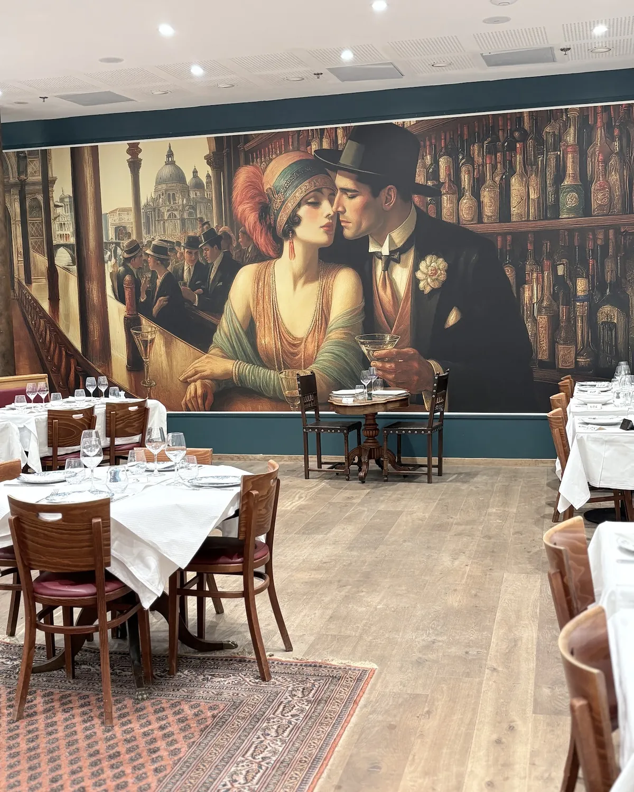
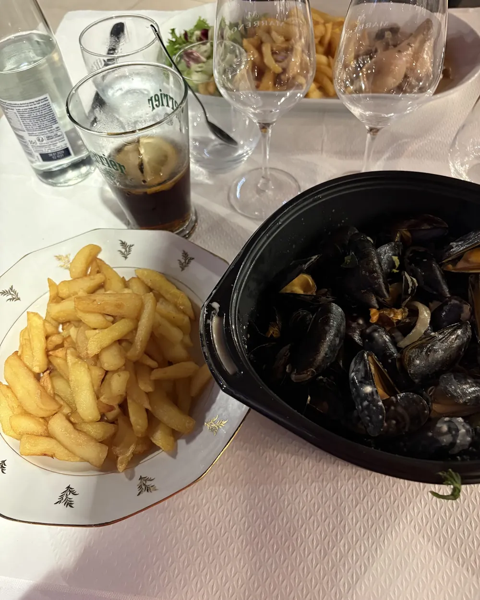
écoleDes élèves au service
Restaurant · cuisine de bouillon · Lille
Le BouillonBaroque
Restaurant école, assiettes copieuses
Sous une grande fresque des Années folles, des élèves en tablier font le service. Escargots, moules-frites, jarret de porc, blanquette, crème brûlée : des classiques de bouillon, midi et soir, du lundi au samedi.
Midi et soir, du lundi au samedi
- Service continu le samedi
- Terrasse sous verrière
- Restaurant école
À table
Les classiques du bouillon, servis copieux
Des escargots en coquille, des moules-frites dans leur cocotte, un jarret de porc et son écrasé de pommes de terre, des plats mijotés en sauce, une crème brûlée pour finir. La carte varie au fil des semaines ; les clients parlent d'une cuisine copieuse et de prix très corrects.
Pour commencer
- Escargotsen photo
Les plats
- Moules-fritesen photo
- Jarret de porc, écrasécité en avis
- Blanquettecité en avis
- Langue de bœufcité en avis
Pour finir
- Crème brûléeen photo
- Riz au laitcité en avis
Plats vus sur les photos des clients ou cités dans leurs avis. La carte du jour et ses prix se lisent sur place.
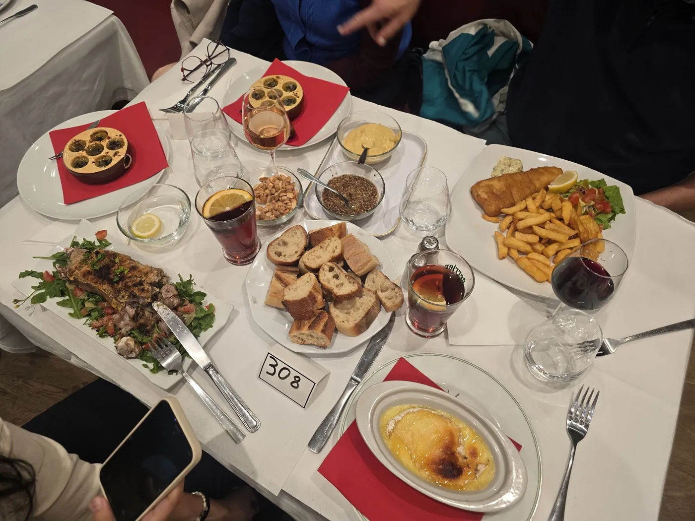
Escargots, frites, crème brûlée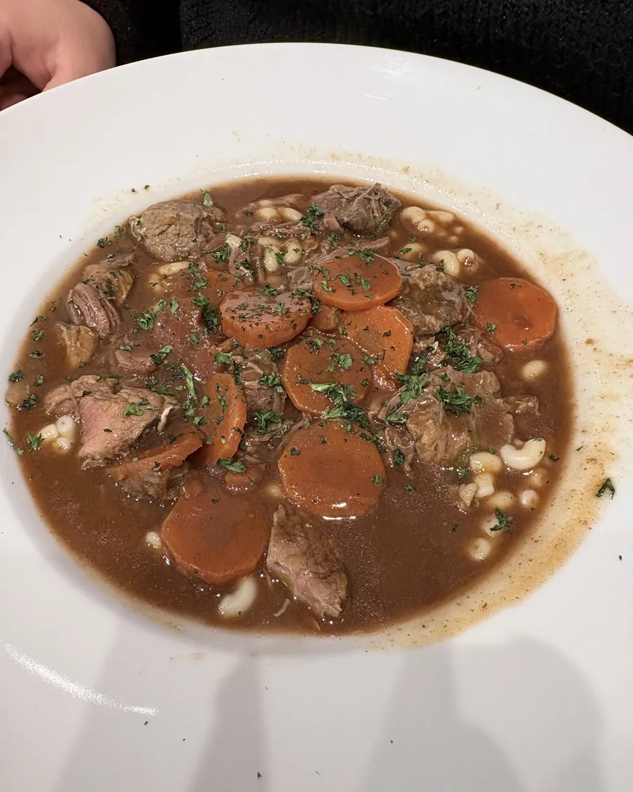
Un mijoté aux carottes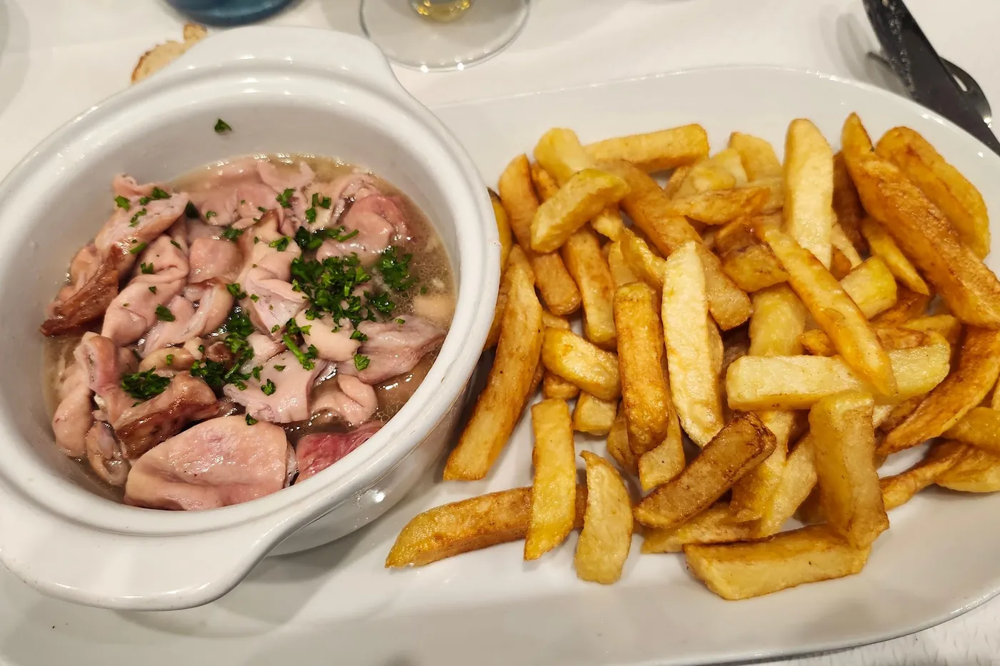
En sauce, avec ses frites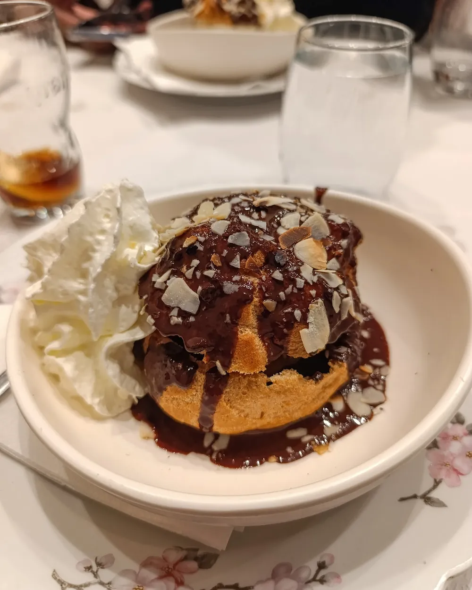
Chocolat, chantilly, amandesJ'ai mangé un jarret de porc avec un écrasé de pomme de terre délicieux […]
Chantal C., avis Google
Faites glisser pour voir les assiettes
J'ai mangé un jarret de porc avec un écrasé de pomme de terre délicieux […]
Chantal C., avis Google
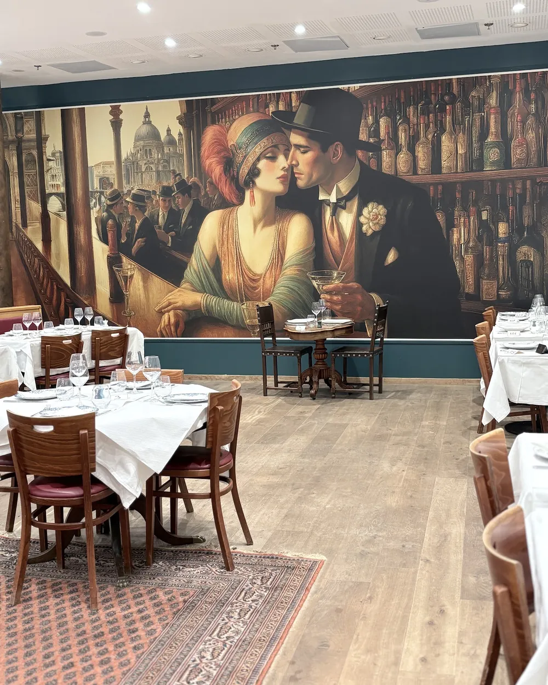
La salle dressée pour le service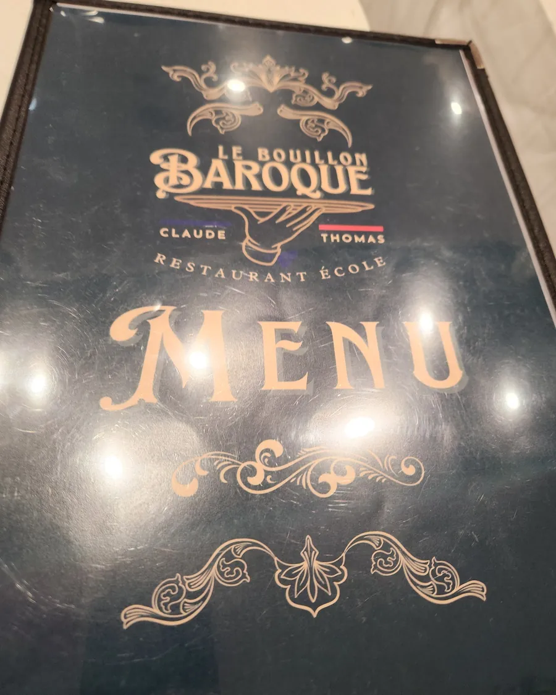
La carteRestaurant école
Ici, c'est la relève qui fait le service
Le Bouillon Baroque est un restaurant école : c'est écrit sur la carte, sous le nom. En salle, les élèves portent le tablier « Formation Serveur Pro » et apprennent le métier au contact des clients, pendant que le patron passe saluer les tables.
- Des élèves en salleChemise blanche, nœud papillon, tablier brodé.
- Le patron présentLes habitués parlent d'un accueil toujours sympathique.
- Une cuisine ouverteOn voit les plats se préparer depuis la salle.
« Le personnel apprenant se montre volontaire et appliqué. Le patron est très gentil. »Chantal C., avis Google
Le décor
Une fresque des Années folles au-dessus des nappes blanches
Tout un mur peint : un couple en tenue des années 1920, plumes, chapeau et coupe à la main, devant un bar chargé de bouteilles. Autour, un mur bleu canard, des nappes blanches, des chaises bistrot en bois et un grand tapis. Et dehors, la terrasse sous la verrière du Lillenium, nappes à carreaux rouges et chaises rouges.
« J'ai aimé l'atmosphère de ce restaurant ! On est vraiment plongé dans un autre univers […] »Jade w., avis Google
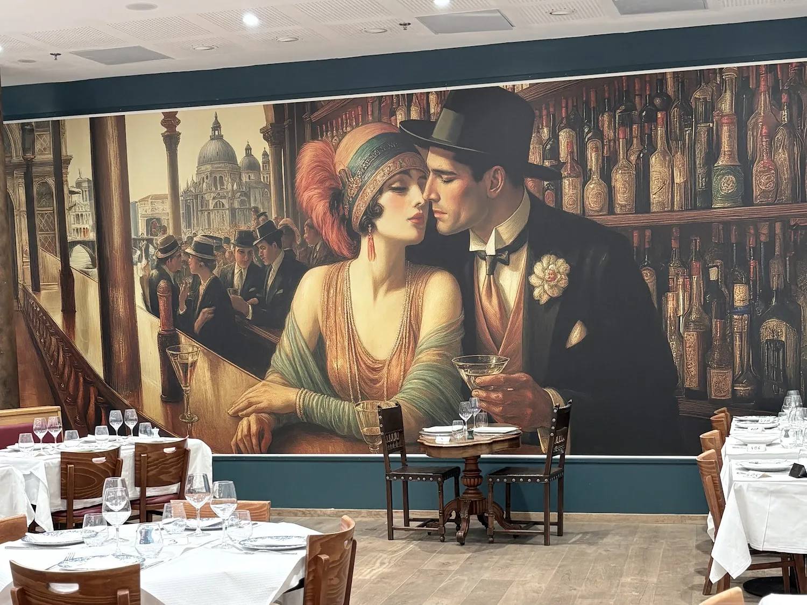
La fresque de la salle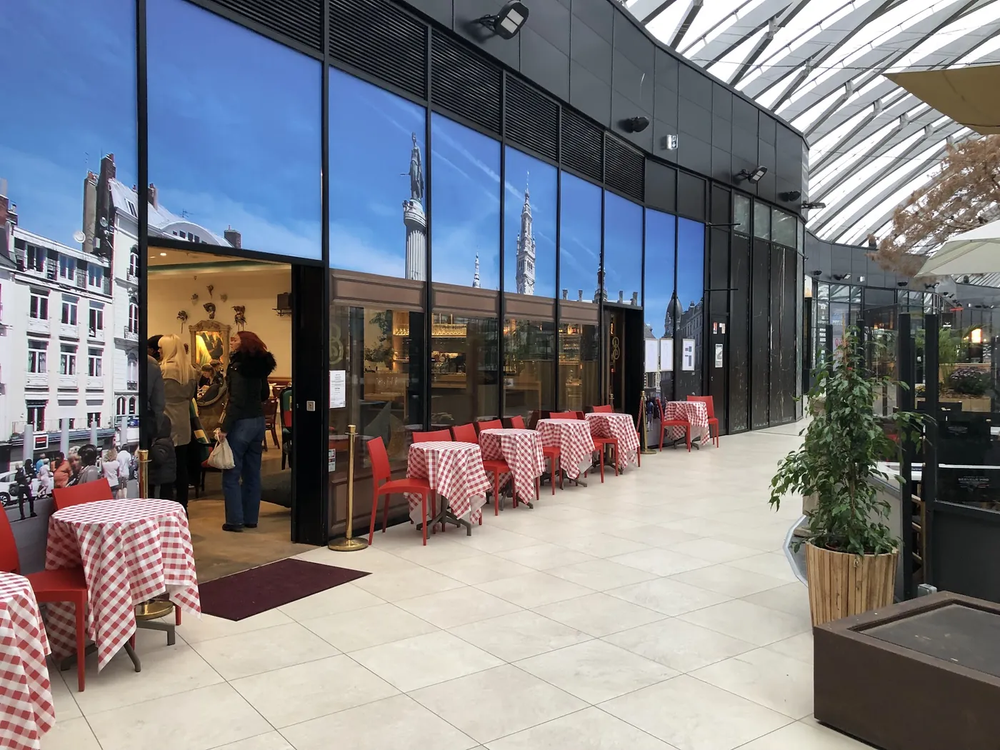
La terrasse sous verrière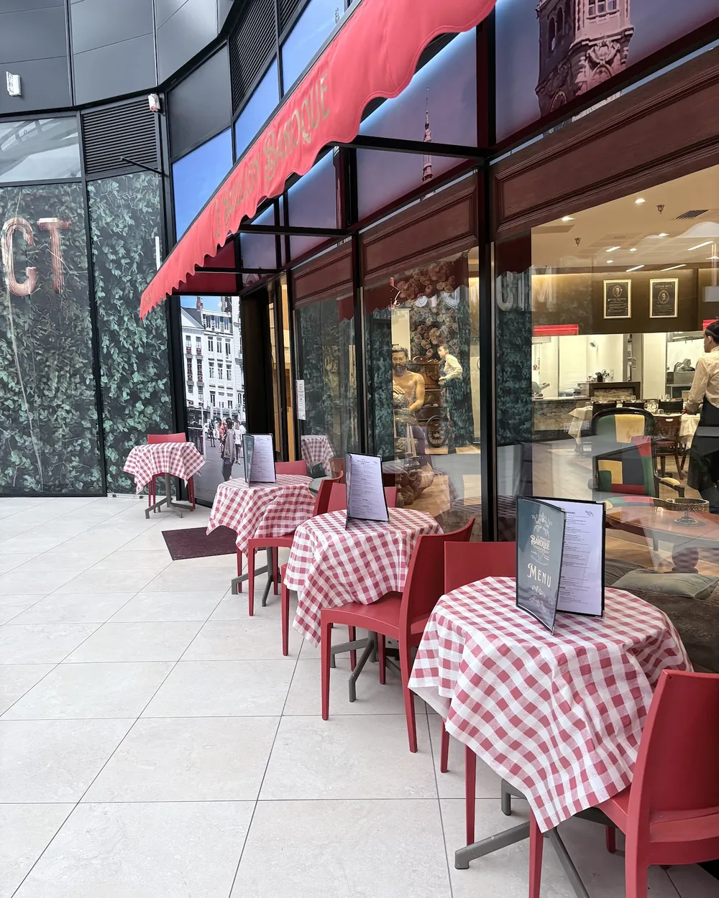
Le long de la vitrineRéserver
Midi ou soir, gardez votre table
Choisissez le jour, l'heure et le nombre de couverts. Un déjeuner rapide, un dîner en famille ou un anniversaire : la table est prête quand vous arrivez.
Avis
« La nourriture un délice »
Ce que les clients écrivent sur Google après un repas au Bouillon Baroque.
Horaires et accès
Deux services par jour, en continu le samedi
| lundi | 11 h 30 – 15 h18 h 30 – 22 h 30 |
|---|---|
| mardi | 11 h 30 – 15 h18 h 30 – 22 h 30 |
| mercredi | 11 h 30 – 15 h18 h 30 – 22 h 30 |
| jeudi | 11 h 30 – 15 h18 h 30 – 22 h 30 |
| vendredi | 11 h 30 – 15 h18 h 30 – 23 h |
| samedi | 11 h 30 – 23 h |
| dimanche | Fermé |
2 rue du Faubourg des Postes
Dans le centre Lillenium · 59000 Lille
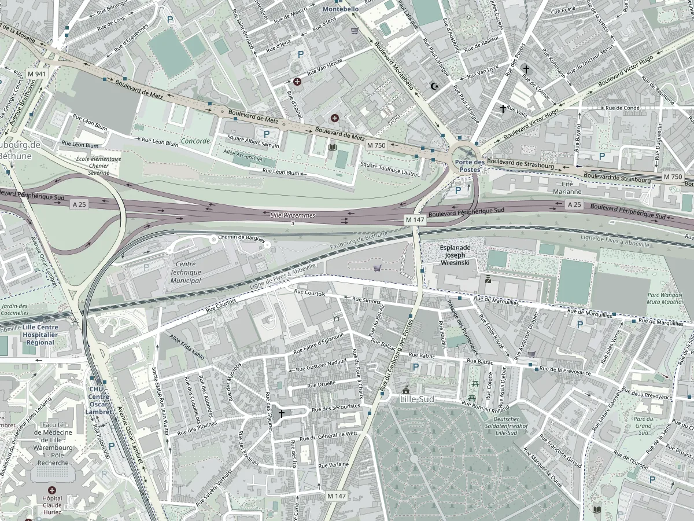
Itinéraire © OpenStreetMapUne tablée à fêter ?
Un anniversaire, un groupe de plus de 12 : 03 20 37 17 12 ou par e-mail.
Au chaud, même dehors
La terrasse est installée dans la galerie couverte du Lillenium, sous la verrière.